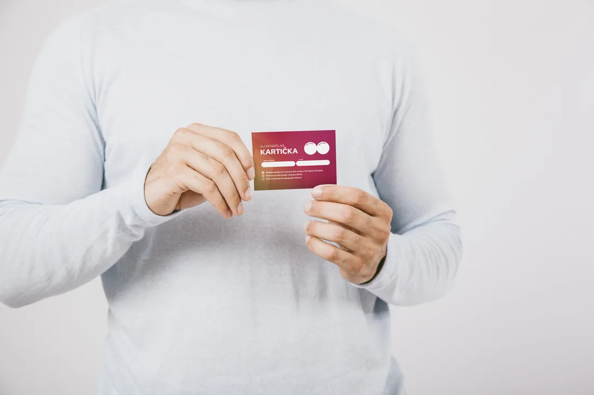

Soutěž o ceny
Připravili jsme pro Vás soutěž na našich akcích, které se konají v okolí Frýdku-Místku. Chceme, abyste poznali naše kandidáty — že jsou to lidé, kteří tady bydlí, a že s nimi můžete mluvit o vašich problémech.
Kde nás potkáte
- 17. červenceZahrát si cornhole
- 1. srpnaNa farmu za zvířátky
- 6. srpnaNa pivo
- 13. srpnaNa guláš
- 20. srpnaZasportovat na Olešnou
- 26. srpnaSledovat film
Jak se zapojit
Podmínkou soutěže je zúčastnit se minimálně dvou našich akcí, kde Vám náš kandidát udělí razítko do slosovatelné kartičky.
Vyplněnou kartičku se dvěma razítky můžete odevzdat na jakékoliv akci — nejpozději na poslední akci, kde budeme také losovat vítěze. Kartičku najdete na letáku, který každému přišel do schránky.
Informovat budeme na sociálních sítích, proto nás sledujte.

Ceny
- 1Wellness pobyt na 1 noc pro dvě osoby v Tee House Čeladná.
- 2Brunch pro dvě osoby v kavárně ŽIVO.
- 3Dvě vstupenky do Aquaparku Olešná.
Odevzdáním kartičky souhlasím se zpracováním jména a e-mailu za účelem účasti v soutěži a kontaktování výherců. Údaje budou uchovány do vyhlášení výsledků a poté smazány. Účast je dobrovolná, souhlas je možné kdykoli odvolat na e-mailu: soutez@spolecneprofm.cz. Úplná pravidla soutěže jsou k dispozici na vyžádání.